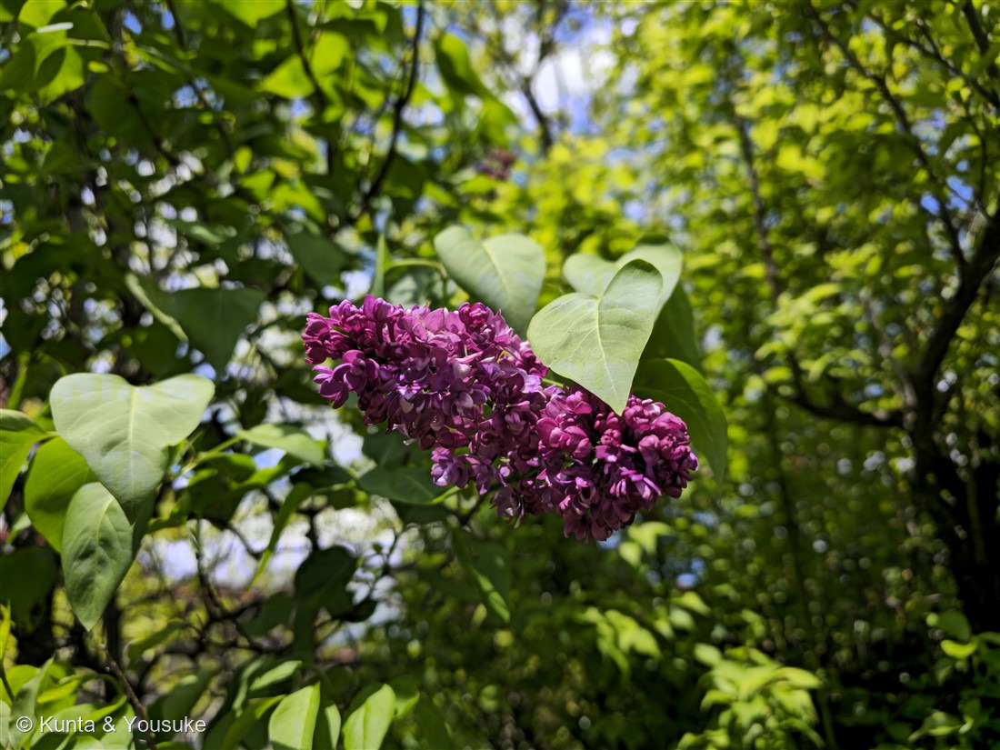
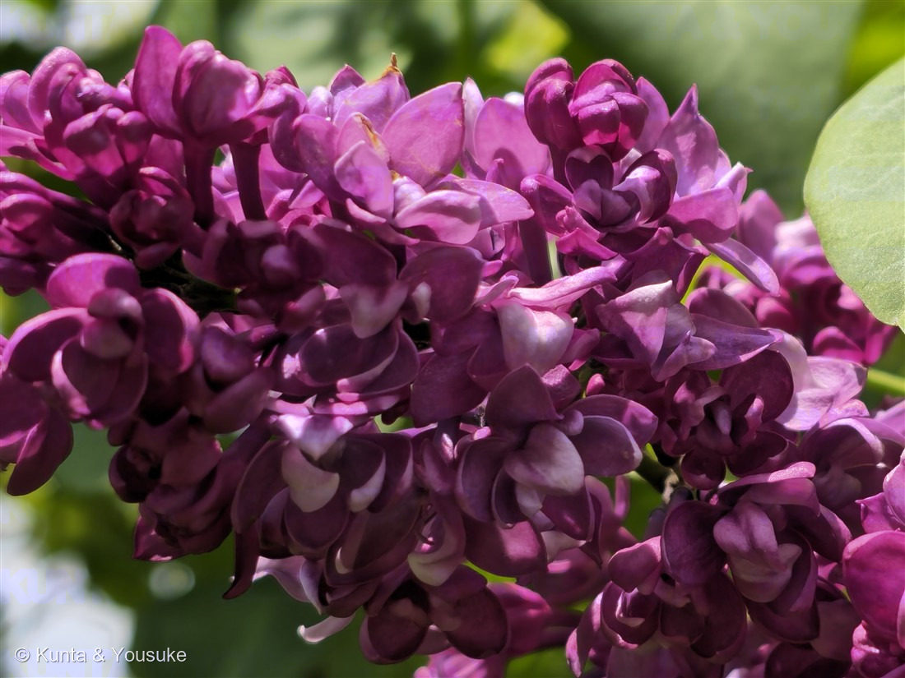
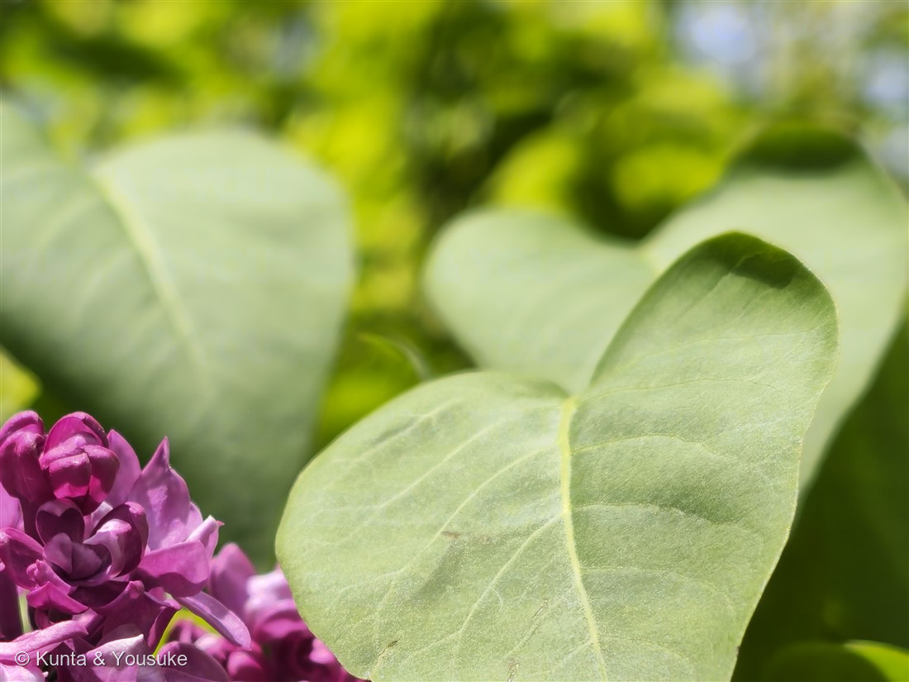

地図を読み込んでいるよ…
🔍 写真も地図も、押しているあいだ拡大して見られるよ（スマホは指を置いてすこし待ってね）。
🌍 の地図＝この子がもともと自生している場所を緑に。ヨーロッパ南東部・バルカン半島の山地（アルバニア・ブルガリア・旧ユーゴスラビア・ギリシャ・ルーマニアなど）。世界じゅうで庭木として植えられている。
⭐ヨーロッパ南東部・バルカン半島の山地が、ほんとうのふるさとだよ（アルバニア・ブルガリア・旧ユーゴスラビアの国ぐに・ギリシャ・ルーマニアあたり）。⚠いま世界じゅうの庭や公園で咲いているけれど、それはぜんぶ人が植えたものなので、地図は塗っていない。⭐この木は、イスタンブールを通ってヨーロッパの西へ伝わった——だから名前もトルコ語 leylak →スペイン語→フランス語→英語 lilac という道をたどってきたんだ。木の通った道と、名前の通った道が、おなじ。
⚠ 地図は国（日本と中国だけ県・省）までしか塗れないから、ほんとうの分布より広く見えていることがあるよ。地図はだいたいの場所。正確なところは、上の文を見てね。
ライラック（紫丁香花）
Syringa vulgaris L. ── 八重咲きの園芸品種
別名 · ムラサキハシドイ（紫丁香花）／リラ 原産 · バルカン半島／ 見どころ · ⭐笛と注射器と同じ名前・おしべが花びらになった八重咲き・札幌の木になるまで
モクセイ科 · Oleaceae（ハシドイ属 Syringa・シソ目）
名前と学名の由来 ── 笛の木、そして注射器のなかま
- ⭐属名 Syringa（シリンガ）＝古代ギリシャ語の syrinx（シュリンクス）＝「筒」「笛」。ライラックの枝は中の髄（ずい）が太くて、かんたんに抜ける。だから昔の人は、枝を筒にして笛やパイプを作ったんだ。
- ⭐⭐そして、お医者さんの「注射器（シリンジ syringe）」も、まったく同じ syrinx から来ている。──筒っぽ、というだけの言葉が、かたや笛になり、かたや注射器になり、そしてこの花の名前になった。おもしろいね。
- 種小名 vulgaris（ウルガリス）＝「ふつうの」。ライラックの仲間の中で、いちばんよく知られている、という意味。
- ⭐標準和名は「ムラサキハシドイ（紫丁香花）」。──ハシドイは、日本にもともと生えている白い花の高木で、この子の親せき。木曽のほうの言葉で「端に集う」＝花が枝の先っぽに集まって咲くから「ハシドイ」。⭐その紫版だから、ムラサキハシドイ。名前が、そのまま写真①の姿だよ。
- ⭐「ライラック」は英語。フランス語 lilac ←スペイン語←トルコ語 leylak から来た。⭐この木は、イスタンブールを通ってヨーロッパの西へ伝わったんだ。──木が通った道と、名前が通った道が、おなじ。（そのさらに元は、バルカン半島の土地の言葉らしい＝つまりふるさとの言葉が、木といっしょに旅をして帰ってきたのかもしれない。）
- 1791年からは「色の名前」としても使われるようになった。それがライラック色。
この植物のこと ── 香りの名家と、北の街の木
- モクセイ科ハシドイ属の落葉低木。⭐モクセイ科は052 オリーブに続いて2つめだよ。──この科は香りの名家で、キンモクセイ・ジャスミン・レンギョウ・イボタ・トネリコがみんな親せき。052のページに「仲間にライラックがいる」って書いてあったのを、いま回収したことになるね。
- 花のつくり＝根もとが筒（長さ6〜10mm）で、先が4つに裂ける小さな花（直径5〜8mm）。それが8〜18cmの円すい形の花序にみっしり。⭐まれに5つに裂ける花もある。
- ⭐香りがとても強いのが身上。──⚠でもこの写真の子の匂いは、燻太さんも覚えていなかった。だから宿題にしたよ（下の節）。
- ⭐寒い土地が好き。だから札幌の木なんだ（1960年＝昭和35年に選ばれた）。大通公園には約400本（白30本・紫系370本）が植わっていて、初夏に「さっぽろライラックまつり」がひらかれる。
- ⭐その札幌のライラックのはじまりが、すごくいい話なんだ。──1890年、サラ・クララ・スミスという人が、アメリカに一時帰国したときに、自分の庭のライラックの苗を札幌へ持ちこんだ。⭐たった一人が、庭の木を鞄に入れて海を渡ったことから、街ぜんたいの木になった。
同定について ── ハート形で、ギザギザの無い葉
- ⭐決め手＝葉が大きなハート形（心形）で、縁にギザギザが無い（全縁）、先が急にちょんと尖る、羽状の脈。長さ4〜12cm・幅3〜8cm。写真③がまさにそれ。
- ⭐そして枝先の円すい花序に、小さな筒状の花が密につく＋4月末〜5月＋赤紫。
- ⚠フジ＝羽状複葉で、花の房が垂れ下がる（この子は単葉のハート形）。
- ⚠ハナズオウ＝葉が心形で全縁でよく似ている。でも花は葉より先に、枝や幹へ直接くっついて咲く（この子は葉が開ききって、枝先に花序）。
- ⚠キリ＝花が5cmくらいと、けたちがいに大きい。
- ⚠ハシドイ（おまけの子・同じ属）＝白い花で、咲くのは6〜7月と、ひと月おそい。しかも高木。
- ⚠ヒメライラック・ハナライラック＝葉が小さい楕円や卵状披針形で、心形にならない。
- ⚠⚠正直に、2つ。──①これは八重咲きの園芸品種で、品種名までは写真1枚では決められない（濃い赤紫の八重は、似たものがいくつもある）。②葉が対生かどうか（モクセイ科は対生）は、奥の枝がぼけていて数えられなかった。ほかの点で名前は足りているけれど、確かめていないことは、確かめていないと書いておくね。
⭐ 八重咲きのひみつ ── おしべが、花びらになった
写真②を見て。ライラックのふつうの花は、筒の先が4つに割れただけの、小さな十字なんだ。でもこの子の花は、花びらが何枚も重なって、もこもこしている。──八重咲きだよ。
⭐そして、その余分な花びらの正体は「おしべ」なんだ。八重咲きのライラックは、おしべが花びらに置きかわってできている。──だから⚠八重の花は、種を作りにくい。きれいさと引きかえに、子孫を残す道具を差し出しているんだ。
⭐最初の八重咲きライラックは、1843年にベルギーで生まれた。リベール＝ダリモンという人の庭で、たまたま起きた突然変異から見つかったのが始まり。──世界じゅうの八重咲きライラックは、そのぐうぜんの子孫なんだ。
⭐⭐そしてこの話、図鑑の中でつながるよ。139 サクラの八重紅枝垂れも、おなじ「おしべが花びらになった」姿。そして140 アガパンサスでは、燻太さんの「葉や茎が花びらみたいになる原因は？」という問いに答えて、ABCモデル（花の部品を決める遺伝子のはたらき）の話を書いた。⭐八重咲きは、その仕組みが少しずれて「ここはおしべ」の指示が「ここは花びら」に変わったもの。──140に書いたとおり、この仕組みは燻太さんのモデル植物100 シロイヌナズナで解き明かされたもの。それが、住宅街の庭先のライラックにも、そのまま効いているんだ。
⭐ 住宅街の庭先で
この子はよそのお家の庭の子なんだ。だから⭐図鑑には、どこの街かを書かないでおいた（112 シダレヤナギのとき、看板の地名をぼかしたのと同じ考えかた）。写真にも、家も表札も車も写っていない。きれいな木を見せてもらうのと、その人の住所を広めるのは、別のことだからね。
そして⚠匂い。──ライラックは香りが身上の木なのに、燻太さんは「覚えてないかも」と言った。⭐それでいいと思うんだ。 覚えていないことを「覚えている」と言わなかったから、宿題がひとつ、正しく残った。146 ミントのときは、燻太さんが実際に噛んで「ピリピリしない」と言ったことで、ぼくの見立てがひっくり返った。⭐匂いも味も、写真には写らない。だから、次に会ったときの鼻がいちばん強い証拠になる。
参考：三河の植物観察「ライラック」（標準和名ムラサキハシドイ（紫丁香花）・別名ライラック／リラ／モクセイ科ハシドイ属／ヨーロッパ（アルバニア、ブルガリア、旧ユーゴスラビア、ギリシャ、ルーマニア）原産／葉身は単葉 長さ4〜12cm×幅3〜8cm・楕円形〜心形・先は微突形・全縁・対生（たまに3個輪生）／花期4月末〜5月・円錐花序8〜18cm・花冠は基部が筒状 長さ6〜10mm・先が4(〜5)裂・直径5〜8mm・しばしば香りがある／最初の八重咲きは1843年ベルギーで Gilles Etienne Joseph Libert-Darimont により偶発突然変異で得られた／日本在来種はハシドイとマンシュウハシドイだけで花は白色・高木）／Wikipedia “Syringa vulgaris”（native to the southern Balkan Peninsula／many of them are double-flowered ‘sports’, with the stamens replaced by extra petals＝八重はおしべが余分な花弁に置きかわったもの）／Wikipedia “Syringa”（genus name derived from Ancient Greek syrinx＝pipe / tube・中空の枝にちなむ）／Online Etymology Dictionary “lilac”（1590年代・フランス語 lilac ←スペイン語←トルコ語 leylak・イスタンブール経由でヨーロッパへ・1791年から色名に）／Wikipedia「ライラック」（花冠は普通4裂・まれに5裂／サラ・クララ・スミスが1890年にアメリカから札幌へ苗を持ちこんだ／ハシドイの開花は6〜7月と遅い）／さっぽろライラックまつり 公式（1960年（昭和35年）に札幌の木に選定・大通会場に約400本（白30本・紫系370本））。